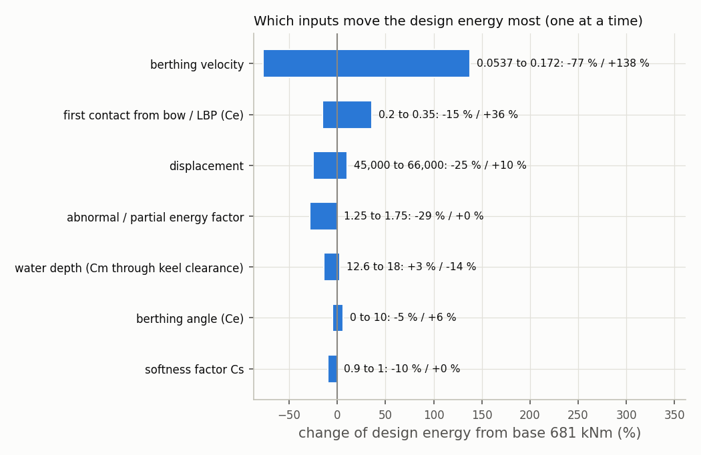
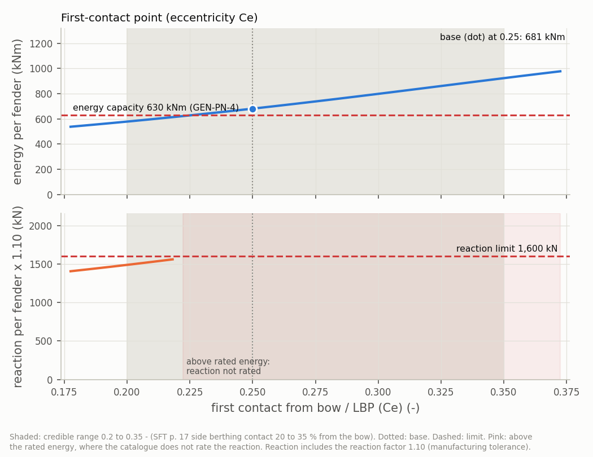
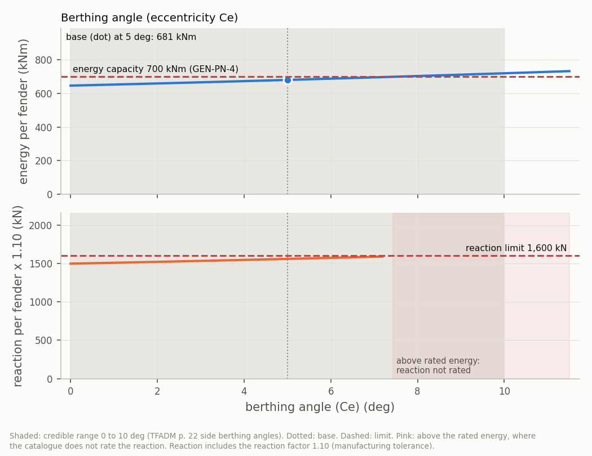
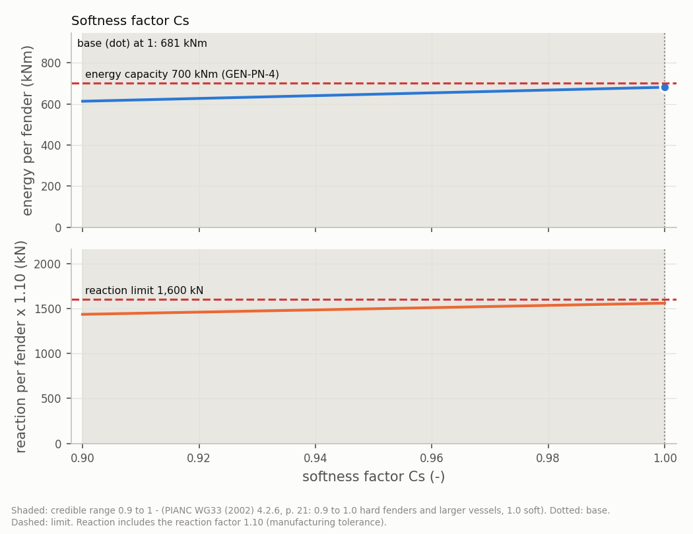
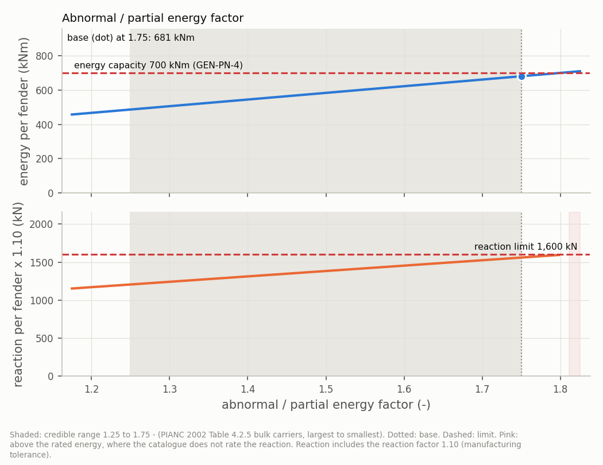

Living method report for the berthing-energy design of ship fenders. It sits beside the
calculation module digitalmodel.hydrodynamics.fender_design (with
digitalmodel.hydrodynamics.berthing_energy), the fender database in data/fender_design/,
the universal workbook generator and the study script in
examples/hydrodynamics/fender_design/. Every number in this report is regenerated by
fender_study.py from generic_case.yaml; the workbook fender-design-generic.xlsx beside
this report is the same case with live formulas. Citation mode for this build: record
(Section 10).
The worked case is a generic Supramax-class bulk carrier in round numbers at an open berth with illustrative (fictional) fenders. It demonstrates the method. It is not a design, and no result here clears a fender for any berth.
record, --allow-unresolved-citations): the default mode strict stops the calculation while the cited wiki pages are missing. Every unresolved citation is flagged on its result and listed below. (Section 10, Table 9.)All methods share the kinetic-energy form
E_N = ½ · M · v_B² · C_m · C_e · C_s · C_c (kNm with M in t and v_B in m/s)
and differ in how v_B and each coefficient are chosen and in the factor applied to reach the design energy:
M is the displacement at the berthing draught. The draught is the berthing draught, never the moulded depth.
Verification levels used throughout: full-text (read in the document), secondary (read in a named document that reproduces it, usually a manufacturer's design manual), formula (closed form of the cited paper, reproduced in the documents named) and digitized (read off a published figure, about ±0.02 m/s). Secondary values should be checked against the primary document before they are used as a design basis. Table 8 lists every source with the date it was read. The PIANC WG33 (2002) values used here were checked against the primary text: section 4.2.4 (C_e and K = (0.19 C_b + 0.11) L), 4.2.5 (keel-clearance C_m 1.8 / 1.5, linear between; Ueda and Vasco Costa with their validity limits; longitudinal approach 1.1), 4.2.6 (C_s, p. 21), 4.2.7 (C_c, p. 22), Table 4.2.5 (abnormal factor), Fig. 4.2.1 (keyed by DWT; curves d and e to be used with caution) and Table 4.4.1 (bulk carriers below 200 kN/m²). The Brolsma values themselves are read from the manuals' table of Fig. 4.2.1 and stay secondary.
Table 1 gives the Brolsma values the module uses at selected sizes; Figure 1 compares the methods.
| Size (t) | a | b | c | d | e |
|---|---|---|---|---|---|
| 5,000 | 0.117 | 0.236 | 0.352 | 0.459 | 0.558 |
| 10,000 | 0.094 | 0.192 | 0.287 | 0.377 | 0.448 |
| 20,000 | 0.074 | 0.153 | 0.228 | 0.303 | 0.355 |
| 50,000 | 0.052 | 0.110 | 0.164 | 0.221 | 0.258 |
| 100,000 | 0.039 | 0.083 | 0.126 | 0.171 | 0.201 |
| 200,000 | 0.028 | 0.062 | 0.095 | 0.131 | 0.158 |
Table 1 – Brolsma design berthing velocity (m/s) by size (t) and curve a to e; DWT for PIANC 2002, displacement for BS 6349-4.
Figure 1 – Design berthing velocity against ship size by method.
| Method | Formula | Validity and pairing | Source |
|---|---|---|---|
| PIANC 2002 (also ROM, WG211 example, EAU) | 1.8 at KC/D ≤ 0.1; 1.875 − 0.75 KC/D; 1.5 at KC/D ≥ 0.5 | use with C_c = 1.0 (the manuals' pairing rule: TFADM p. 27, SFT p. 18) | full-text (PIANC WG33 (2002) 4.2.5); ROM p. 265 full-text |
| Vasco Costa (1964) (BS 6349-4, IS 4651) | 1 + 2T/B | v ≥ 0.08 m/s, KC ≥ 0.1T; pair with C_c | formula (also in PIANC WG33 (2002) 4.2.5) |
| Ueda (1981) (Japanese practice) | 1 + πT/(2 C_b B) | pair with C_c | formula (also in PIANC WG33 (2002) 4.2.5) |
| UFC 4-152-01 surface vessels | C_M0 + (C_m1 − C_M0)(T/d)^3.5, C_M0 = 1.3 + 1.5T/B, C_m1 = F[12.4(T/B)^0.3 − 50T/L] | F = 1.5C_b (C_b < 0.6) or 0.9; the C_b in F is read two ways (printed wording: the berthing coefficient C_e·C_g·C_d·C_c, Eq. 5-2, p. 106, restated p. 109; alternative: the block coefficient), option ufc_f_basis, this build berthing_coefficient |
full-text |
| Longitudinal approach | 1.1 | full-text (PIANC WG33 (2002) 4.2.5) |
Table 2 – Added-mass methods.
The UFC form rises steeply in shallow water (T/d near 1) and gives values well above the
others there; UFC itself notes that added mass may exceed PIANC below a depth/draught of 1.2.
The C_b inside the UFC factor F is a source ambiguity. The printed wording on p. 109 is
"C_b = berthing coefficient as defined previously", that is C_e·C_g·C_d·C_c of Equation 5-2
(p. 106); the block coefficient has its own symbol (C_BL, p. 107). The threshold 0.6 and the
form 1.5 C_b read as a hull-form limit, which supports the block coefficient instead. The
source text does not settle it, so both readings are an explicit option: the case option
ufc_f_basis takes berthing_coefficient (the default, the printed wording) or
block_coefficient, and the workbook carries the same choice as the live input UFCF (1 or 0).
This build uses berthing_coefficient. For the generic case the UFC design energy is
773.0 kNm under the berthing-coefficient reading and 874.3 kNm under the
block-coefficient reading. Under the berthing-coefficient reading the UFC C_m depends on the
contact point; the UFC curve in Figure 2 uses the C_b in F of the base case. TR-6074-OCN, which
UFC cites for the added mass, was not read, so the reading is not resolved against that source.
Figure 2 shows the four forms for the generic ship.

Figure 2 – Added mass factor against keel clearance for the generic ship.
C_e = (K² + R² cos² φ) / (K² + R²), K = (0.19 C_b + 0.11) L_BP (PIANC 2002 4.2.4). R is the distance from the first-contact point to the centre of mass, taken at mid-L_BP on the centreline unless the LCG is known. φ is the angle between the velocity vector (normal to the berth) and R; for a contact forward of midships with berthing angle α, φ = 90° − α − asin(B/2R), the form printed in the ShibataFenderTeam manual (the module computes φ from the geometry and the test suite checks it equals this form).
pianc2002) gives these geometry fields: cb 0.847, k_m 48.763, r_m 47.760, phi_deg 65.427, ce 0.595.cs_basis pianc2002, source pianc2002-cs). The 0.15 m deflection
figure is BS 6349-4's definition of a hard fender, which the Trelleborg manual (p. 27) and
the ShibataFenderTeam manual (p. 20) apply as C_s 0.9 at or below 0.15 m; the module offers
that rule only when the caller selects it (cs_basis tfadm-2024, source tfadm-2024). ROM
has its own rule (0.9 also for ships of 300 m and longer). WG211 removes C_s. This build uses
pianc2002.cc_basis pianc2002, source pianc2002-cc); for a
partly closed berth it takes 1.0, the open-berth value, as an assumption (Table 10). The
ShibataFenderTeam table (p. 20: solid quay 0.8 at KC/D ≤ 0.5 or 0.9 above, partly closed 0.9
or 1.0) is an option the caller selects (cc_basis sft-2026, source sft-2026); it is never
cited as PIANC. With the PIANC keel-clearance C_m, C_c is 1.0: this pairing is the manuals'
rule (Trelleborg p. 27, "usually assumed"; ShibataFenderTeam p. 18), not a clause of 4.2.7.
ROM and UFC keep their own C_c (ROM 0.9 for a solid quay; UFC 0.8). WG211 removes C_c. This
build uses pianc2002; the generic berth is open, so its C_c is 1.0 under either basis.pianc2002). The ShibataFenderTeam manual (p. 22) says the factors were "also adopted by
EAU-2004"; the EAU 2012 text was not read.low, the column with the largest
factor; moderate or high gives a smaller factor and needs a basis in the spread of
displacements using the berth (the generic case assumes high, Table 10). γ_n is not
extrapolated below one berthing a year, where the logarithm turns negative (γ_E would fall
below 1 under 0.22 a year for class B); the range of the fit was not read.energy_tolerance and reaction_tolerance apply to
the base fender's type, and tolerances_by_type gives every other type in the catalogue (a
catalogue with another type and no entry for it is refused). The generic case gives foam
0.15 on energy and reaction, the upper end of its range (Table 10).wg211_fender_capacity takes C_ang as given only to reproduce the R24B example.HULL_PRESSURE_KPA. The sources disagree for bulk carriers (one paper lists
200 to 320 kPa for WG33); the module uses 200 kPa and records the conflict.eccentricity_k2_numerator exists only
to quantify the error.Plausibility checks on the inputs: a block coefficient M/(ρ L_BP B T) above 1 is refused, and one outside 0.45 to 0.9 is flagged on every result (an assumed range, Table 10). The berthing angle is below 90° in magnitude, and its sign agrees with the end of first contact: with the bow nearer the berth (angle above 0) the first contact is in the forward half, with the stern nearer (below 0) in the aft half. The other sign would put the contact on the far end and lower C_e (to −14 % for the generic ship at −19.6°). The workbook applies the same rules to its inputs.
| Method | v (m/s) | Cm | Ce | Cs | Cc | Other | Normal (kNm) | Factor | Design (kNm) | Per fender / capacity | Flags |
|---|---|---|---|---|---|---|---|---|---|---|---|
| PIANC WG33 (2002) | 0.112 | 1.750 | 0.595 | 1.00 | 1.00 | 1.00 | 389.1 | 1.75 | 680.8 | 0.973 | - |
| PIANC WG211 (2024) | 0.150 | 1.750 | 0.595 | 1.00 | 1.00 | 1.00 | 702.9 | 1.59 | 1,116.9 | 1.755 | WG211 factors from the 2024 background papers; final guideline tables not read |
| BS 6349-4:2014 | 0.102 | 1.750 | 0.595 | 1.00 | 1.00 | 1.00 | 328.2 | 1.75 | 574.3 | 0.820 | - |
| EAU 2012 | 0.153 | 1.750 | 0.595 | 1.00 | 1.00 | 1.00 | 727.1 | 1.75 | 1,272.5 | 1.818 | EAU velocities digitized at two sizes only |
| ROM 2.0-11 (2012) | 0.150 | 1.750 | 0.595 | 1.00 | 1.00 | 0.95 | 667.8 | 1.50 | 1,001.7 | 1.431 | - |
| UFC 4-152-01 (2017 C1) | 0.099 | 3.427 | 0.540 | 1.00 | 1.00 | 0.95 | 515.3 | 1.50 | 773.0 | 1.104 | below 0.10 m/s: use with caution (TFADM p. 23) |
| Ueda Cm (Japan), PIANC 2002 v and factor | 0.112 | 1.696 | 0.595 | 1.00 | 1.00 | 1.00 | 376.9 | 1.75 | 659.7 | 0.942 | - |
| IS 4651-3:1974 (withdrawn) | 0.200 | 1.750 | 0.504 | 0.90 | 1.00 | 1.00 | 952.2 | 1.00 | 952.2 | 1.360 | withdrawn standard; comparison only |
Table 3 – Design berthing energy by method for the generic case (same ship and berth). The "per fender / capacity" column is energy per fender over the base fender capacity under that method (for WG211 the capacity is divided by γ_m). Flags in bold put a formula outside its stated validity; such a result is outside the method's basis and is shown for comparison only. The citation qualification common to all rows is in Table 9.

Figure 3 – Utilisation of the base fender by method: energy per fender over the fender capacity under that method (for WG211 divided by γ_m), against the limit 1.0. Each method is compared with its own capacity, and a bar beyond 1.0 is over capacity. The bar label gives the design energy. A hatched bar is outside the stated validity of a formula it uses (note below the chart).
| Method | Velocity basis | Cm basis | Factor basis |
|---|---|---|---|
| PIANC WG33 (2002) | pianc2002-velocity: curve b (difficult berthing, sheltered) at 48,000 DWT | pianc2002-cm: pianc2002; KC/D = 0.167 | pianc2002: PIANC 2002 Table 4.2.5, bulk, smallest ships |
| PIANC WG211 (2024) | pianc-wg211: moderate: R24B default without site data (pp. 976-979) | pianc2002-cm: keel clearance rule (as in the R24B example); KC/D = 0.167 | pianc-wg211: gamma_Eref 1.59 (class B, moderate, CoV_M high, single contact) x gamma_n 0.999 (100/yr); gamma_p = gamma_c = 1.0 |
| BS 6349-4:2014 | bs6349-4-velocity: curve b (difficult berthing, sheltered) at 60,000 t | vasco-costa-1964: vasco_costa; KC/D = 0.167 | pianc2002: PIANC 2002 Table 4.2.5, bulk, smallest ships; BS 6349-4 own factor table not read |
| EAU 2012 | eau-2012: moderate (normal), characteristic value, digitized | pianc2002-cm: pianc2002; KC/D = 0.167 | pianc2002: PIANC 2002 Table 4.2.5, bulk, smallest ships; applied to EAU (SFT p. 22: adopted by EAU-2004; the EAU 2012 text was not read) |
| ROM 2.0-11 (2012) | rom-2.0-11: Table 4.6.4.36, moderate, digitized | rom-2.0-11: 1.8 / 1.5 keel-clearance rule (p. 265); KC/D = 0.167 | rom-2.0-11: Table 4.6.4.43 product (with tugs, 100 calls/yr, T_R 500 yr) |
| UFC 4-152-01 (2017 C1) | ufc-4-152-01: Figs. 5-3/5-4, moderate (sheltered/moderate/exposed), digitized; Fig. 5-3 below 5,000 LT; larger of Figs. 5-3 and 5-4 from 5,000 to 20,000 LT; Fig. 5-4 above | ufc-4-152-01: 5-2.1.1 e surface vessels; F 0.770 from berthing coefficient Ce Cg Cd Cc = 0.513 (Eq. 5-2, p. 106; p. 109, printed wording; the block coefficient reading is the alternative) | ufc-4-152-01: 5-1.5.3: increase by at least 50 % |
| Ueda Cm (Japan), PIANC 2002 v and factor | pianc2002-velocity: curve b (difficult berthing, sheltered) at 48,000 DWT | ueda-1981: ueda; KC/D = 0.167 | pianc2002: PIANC 2002 Table 4.2.5, bulk, smallest ships |
| IS 4651-3:1974 (withdrawn) | is-4651-3-1974: Table 2 | is-4651-3-1974: 5.2.1.2: 1 + 2D/B | is-4651-3-1974: no abnormal factor in the method |
Table 4 – Basis of the velocity, added mass and factor for each method.
Observations for this case:
data/fender_design/ holds the database schema (database_schema.yaml), the catalogue
index (catalogue_index.csv: catalogue, edition, URL, fender types, row count, date read)
and illustrative rows for tests and examples. The rated values themselves come from
manufacturers' catalogues and are held in a private vendor table with a citation per row
(catalogue, page or table, value method, date read); scripts/fender_design/import_vendor_tables.py
converts that table into the schema and into the selection-catalogue layout the workbook
reads. The database currently holds 4,652 rows from 14 catalogues (Figure 4):
cone, cell, element, arch, V, cylindrical and other solid rubber types, and pneumatic, foam,
foam-filled and hydropneumatic floating fenders. Float levels of floating fenders are not
published in the catalogues read.
Each row keeps its performance basis: RPD (rated performance at the PIANC initial velocity),
CV (slow constant velocity) or GEA (guaranteed energy absorption, floating fenders). The
selection catalogue written by the importer carries the basis, and both the importer and the
case loader refuse a catalogue in which one fender type holds rows on different bases: a CV
and an RPD row of the same size are two ratings of one fender, not two fenders. Where the
vendor tables hold both, one basis is chosen at export (--perf-basis).

Figure 4 – Rows in the fender database by fender type.
build_fender_workbook.py writes an xlsx from a case file and a catalogue:
The test suite recomputes the workbook's formulas and checks C_b, K, R, φ, C_e, every method's design energy and the fender utilisation against the module. It then changes ten inputs (displacement, DWT, depth, contact point, angle, structure, fender deflection, calls a year, tugs, continuous berth) so that each threshold is crossed, recomputes, and checks every method's velocity, C_m, C_e, C_s, C_c, factor and design energy against the module run on the changed case; and it checks that the velocity override cell drives every method (ROM factor 1.80 at 0.08 m/s).
Each input is moved alone over a credible range with every other input at its base. Each chart shows the energy per fender with the base fender's capacity, and below it the reaction per fender, multiplied by the reaction factor 1.10, with the reaction limit; the credible range is shaded and the base is marked. Above the rated energy the catalogue does not rate the reaction, and the chart says so. A velocity sweep re-evaluates the method at each velocity, so velocity-dependent coefficients (the ROM accidental factor and C_c) follow it. A C_c sweep re-evaluates the method with C_c given, so terms derived from C_c follow it (the UFC 4-152-01 added mass, through the berthing coefficient C_e C_g C_d C_c in its factor F, under the berthing-coefficient reading). Only coefficients the method uses are swept, within the values its own rule gives; the inputs left out for this method are:
| Input | Why it is not swept for this method |
|---|---|
| cc | Cc is 1.0 with the PIANC keel-clearance Cm, which already includes the confined-water effect (pairing rule of the manuals: TFADM p. 27, SFT p. 18) |
| Input | Base | Credible range | Basis | Design energy change at range ends | Utilisation at range ends | Value at utilisation 1 | Reaction x 1.10 at range ends (kN) | Value at reaction limit |
|---|---|---|---|---|---|---|---|---|
| berthing velocity | 0.1116 m/s | 0.0537 to 0.172 m/s | Brolsma conditions a to c at 48,000 DWT | -77 % / +138 % | 0.225 / 2.311 | 0.1132 m/s | 535 / not rated | - |
| displacement | 60,000 t | 45,000 to 66,000 t | part-loaded to 10 % above the base | -25 % / +10 % | 0.729 / 1.070 | 61,689 t | 1,250 / not rated | - |
| water depth (Cm through keel clearance) | 14 m | 12.6 to 18 m | KC/D 0.05 to 0.5, the PIANC Cm range | +3 % / -14 % | 1.0004 / 0.834 | 13.21 m | not rated / 1,383 | - |
| first contact from bow / LBP (Ce) | 0.25 | 0.2 to 0.35 | SFT p. 17 side berthing contact 20 to 35 % from the bow | -15 % / +36 % | 0.826 / 1.318 | 0.2586 | 1,373 / not rated | - |
| berthing angle (Ce) | 5 deg | 0 to 10 deg | TFADM p. 22 side berthing angles | -5 % / +6 % | 0.924 / 1.029 | 7.500 deg | 1,498 / not rated | - |
| softness factor Cs | 1 | 0.9 to 1 | PIANC WG33 (2002) 4.2.6, p. 21: 0.9 to 1.0 hard fenders and larger vessels, 1.0 soft | -10 % / +0 % | 0.875 / 0.973 | - | 1,436 / 1,560 | - |
| abnormal / partial energy factor | 1.75 | 1.25 to 1.75 | PIANC 2002 Table 4.2.5 bulk carriers, largest to smallest | -29 % / +0 % | 0.695 / 0.973 | 1.799 | 1,205 / 1,560 | - |
Table 5 – One-at-a-time sensitivity of the design energy by the selected method, PIANC WG33 (2002), for the generic case. A utilisation is given to three decimals, and to more where three would round it onto 1.000. The value at utilisation 1 is solved on the method, not interpolated between swept points (which drifts at a coefficient break such as the C_m kink at KC/D 0.1): berthing velocity, displacement, first contact from bow / LBP (Ce), berthing angle (Ce), abnormal / partial energy factor: bisection on the method between the bracketing swept points; water depth (Cm through keel clearance): closed form: keel-clearance Cm 1.79925 needed (base Cm 1.75000 / base utilisation 0.97263).

Figure 5 – Ranking of inputs by the span of design energy over their credible ranges.
| Rank | Input | Span of design energy (percentage points) |
|---|---|---|
| 1 | berthing velocity | 214 |
| 2 | first contact from bow / LBP (Ce) | 51 |
| 3 | displacement | 35 |
| 4 | abnormal / partial energy factor | 29 |
| 5 | water depth (Cm through keel clearance) | 17 |
| 6 | berthing angle (Ce) | 11 |
| 7 | softness factor Cs | 10 |
Table 6 – Ranking.

Figure 6 – Berthing velocity.

Figure 7 – Displacement.

Figure 8 – Water depth (C_m through keel clearance).

Figure 9 – First-contact point (C_e).

Figure 10 – Berthing angle (C_e).

Figure 11 – Softness factor C_s.

Figure 12 – Abnormal (or partial) energy factor.
| Fender | Rated energy (kNm) | Design capacity (kNm) | Utilisation | Rated reaction (kN) | Design reaction (kN) | Design hull pressure (kPa) | Energy | Reaction <= 1,600 kN | Pressure <= 200 kPa |
|---|---|---|---|---|---|---|---|---|---|
| GEN-PN-4 (base) | 700 | 700 | 0.973 | 1,450 | 1,595 | 231 | yes | yes | no |
| GEN-PN-2 | 250 | 250 | 2.723 | 800 | 880 | 143 | no | yes | yes |
| GEN-PN-3 | 400 | 400 | 1.702 | 1,100 | 1,210 | 148 | no | yes | yes |
| GEN-PN-5 | 900 | 900 | 0.756 | 1,600 | 1,760 | 165 | yes | no | yes |
| GEN-FM-6 | 1,000 | 850 | 0.801 | 1,400 | 1,610 | 207 | yes | no | no |
Table 7 – Illustrative fenders against the energy per fender and the limits, with the same design adjustments as the base fender. Energy: rated x (1 - energy tolerance: pneumatic rows 0.00; foam rows 0.15) x angular 1.00. Reaction and hull pressure: rated-deflection value x (1 + reaction tolerance: pneumatic rows 0.10; foam rows 0.15). The reaction and pressure are the values at rated deflection, an upper bound for part load when the curve does not exceed the rated reaction before the rated point (Section 3.6).

Figure 13 – Neighbouring sizes: design energy capacity against energy per fender and design reaction against the limit (adjustments as Table 7).
The tests (tests/hydrodynamics/fender_design/) reproduce published worked examples:
low, single contact, 100 calls a year gives 1.819 (moderate) and 1.569 (monitored)
against the printed 1.80 and 1.55, and design energies within 1.5 % of 4,659 and 1,783 kNm;strict) refuses to calculate; this build used citation mode
record (Section 1). A result whose citation is not resolved is flagged
"citation not resolved against the wiki" (Table 9); its values rest on the source register
only (Table 8).| Id | Document | Edition | Clause | Verification | Read in | Date read |
|---|---|---|---|---|---|---|
| pianc2002 | PIANC MarCom WG33, Guidelines for the Design of Fender Systems | 2002 | section 4.2 (energy), Table 4.2.5 (abnormal factor), Table 4.4.1 (hull pressure) | full-text | PIANC WG33 (2002), primary text; also Trelleborg Fender Application Design Manual MN-FEN-V4.0-EN (2024) pp. 23-28, 46; ShibataFenderTeam Design Manual (English, 2026) pp. 17-22, 33 | 2026-11-16 |
| pianc2002-velocity | PIANC 2002 design berthing velocity (Brolsma et al. 1977 curves a to e) | 2002 | Fig. 4.2.1; table keyed by DWT | secondary | Trelleborg Fender Application Design Manual MN-FEN-V4.0-EN (2024) p. 23 | 2026-11-16 |
| bs6349-4-velocity | BS 6349-4:2014 design berthing velocity (Brolsma curves) | 2014 | Figure 9; keyed by displacement | secondary | ShibataFenderTeam Design Manual (English, 2026) p. 21 | 2026-11-15 |
| bs6349-4 | BS 6349-4:2014 Maritime works. Code of practice for design of fendering and mooring systems | 2014 | berthing energy (as summarised) | secondary | ShibataFenderTeam Design Manual (English, 2026) pp. 4, 18, 21-22; Trelleborg Fender Application Design Manual MN-FEN-V4.0-EN (2024) pp. 15, 23 | 2026-11-15 |
| vasco-costa-1964 | Vasco Costa, F. The berthing ship | 1964 | Cm = 1 + 2D/B; valid for v >= 0.08 m/s and UKC >= 0.1 D | formula | Trelleborg Fender Application Design Manual MN-FEN-V4.0-EN (2024) p. 24; ShibataFenderTeam Design Manual (English, 2026) p. 18; PIANC WG33 (2002), primary text section 4.2.5 | 2026-11-16 |
| ueda-1981 | Ueda, S. et al. added mass of berthing ships | 1981 | Cm = 1 + pi D / (2 Cb B) | formula | Trelleborg Fender Application Design Manual MN-FEN-V4.0-EN (2024) p. 24; ShibataFenderTeam Design Manual (English, 2026) p. 18; PIANC WG33 (2002), primary text section 4.2.5 | 2026-11-16 |
| pianc2002-cm | PIANC 2002 added mass from keel clearance | 2002 | section 4.2.5 | full-text | PIANC WG33 (2002), primary text; also ShibataFenderTeam Design Manual (English, 2026) p. 18; Trelleborg Fender Application Design Manual MN-FEN-V4.0-EN (2024) p. 24 | 2026-11-16 |
| pianc2002-ce | PIANC 2002 eccentricity | 2002 | section 4.2.4 | full-text | PIANC WG33 (2002), primary text; also Trelleborg Fender Application Design Manual MN-FEN-V4.0-EN (2024) p. 25; ShibataFenderTeam Design Manual (English, 2026) p. 19 | 2026-11-16 |
| pianc2002-cc | PIANC 2002 berth configuration factor | 2002 | section 4.2.7, p. 22 | full-text | PIANC WG33 (2002), primary text p. 22 | 2026-11-16 |
| pianc2002-cs | PIANC 2002 softness factor | 2002 | section 4.2.6, p. 21 | full-text | PIANC WG33 (2002), primary text p. 21 | 2026-11-16 |
| tfadm-2024 | Trelleborg Fender Application Design Manual MN-FEN-V4.0-EN (2024) | 2024 | pp. 22-46 | full-text | 2026-11-15 | |
| sft-2026 | ShibataFenderTeam Design Manual (English, 2026) | 2026 | pp. 17-36 | full-text | 2026-11-15 | |
| iso17357-1 | ISO 17357-1:2014 Ships and marine technology. Floating pneumatic rubber fenders | 2014 | performance at 60 % deflection (GEA) | secondary | Trelleborg Pneumatic Fenders BC-PNE-V6-EN (2025) pp. 8-9; Yokohama floating fender web table | 2026-11-15 |
| pianc-wg211 | PIANC MarCom WG211, Guidelines for the Design of Fender Systems | 2024 | semi-probabilistic format: E_k,d = gamma_E E_k,c; E_f,d = E_f,c / gamma_m; Cs and Cc removed | secondary | Roubos, Iversen, Oskamp (2024) Backgrounds partial energy factors for fender design, 35th PIANC World Congress, pp. 959-966 (Eq. 3-18, Tables 3, 8, 9, 12); Roubos, Mirihagalla, Gaal, Blankers, Groenewegen (2024) Comparison of fender dimensions, PIANC WG211 and PIANC WG33, 35th PIANC World Congress, pp. 973-982 (Tables 1-4) | 2026-11-15 |
| ufc-4-152-01 | UFC 4-152-01 Design: Piers and Wharves | 2017, Change 1 2024 | 5-2.1 (Eq. 5-1, 5-2; Ce, Cg, Cd, Cc, Cm), 5-1.5.3 (+50 % accidental), Figs. 5-3 and 5-4 | full-text | WBDG copy | 2026-11-16 |
| rom-2.0-11 | ROM 2.0-11 Recomendaciones para el proyecto y ejecucion en obras de atraque y amarre | June 2012 | 4.6.4.4.3 (energy, Cm, Ce, Cg, Cc, Cs), Table 4.6.4.36 (velocity with tugs), Table 4.6.4.43 (accidental factors), Table 4.6.4.42 (hull pressure) | full-text | Puertos del Estado PDF (archived copy, Spanish) | 2026-11-15 |
| eau-2012 | EAU 2012 Recommendations of the Committee for Waterfront Structures (9th English ed.) | 2012 | R 38, R 40 (berthing velocity), R 60 (fenders for large vessels) | secondary | Roubos et al. (2017) Eq. 8-12 and Fig. 1; SFT p. 18, 22 | 2026-11-15 |
| is-4651-3-1974 | IS 4651 (Part III):1974 Code of practice for planning and design of ports and harbours, Loading | 1974 (withdrawn; superseded 2020) | 5.2.1 (energy, Cm, Ce, Cs), Table 2 (velocity), 5.2.2 | full-text | BIS scan | 2026-11-15 |
Table 8 – Source register (fender_design.SOURCES), with the date each source was read for it.
| Citation (code_id) | Wiki page | Methods | Status |
|---|---|---|---|
| PIANC-WG33-2002 | wikis/marine-engineering/wiki/standards/pianc-wg33-2002.md | pianc2002, wg211, bs6349, eau, ueda | unresolved: page_missing |
| PIANC-WG211-2024 | wikis/marine-engineering/wiki/standards/pianc-wg211-2024.md | wg211 | unresolved: page_missing |
| BS-6349-4 | wikis/marine-engineering/wiki/standards/bs-6349-4.md | bs6349 | unresolved: page_missing |
| vasco-costa-1964 | wikis/marine-engineering/wiki/concepts/vasco-costa-1964-berthing-added-mass.md | bs6349 | unresolved: page_missing |
| EAU-2012 | wikis/marine-engineering/wiki/standards/eau-2012.md | eau | unresolved: page_missing |
| ROM-2.0-11 | wikis/marine-engineering/wiki/standards/rom-2-0-11.md | rom | unresolved: page_missing |
| UFC-4-152-01 | wikis/marine-engineering/wiki/standards/ufc-4-152-01.md | ufc | unresolved: page_missing |
| ueda-1981 | wikis/marine-engineering/wiki/concepts/ueda-1981-berthing-added-mass.md | ueda | unresolved: page_missing |
| IS-4651-3 | wikis/marine-engineering/wiki/standards/is-4651-3.md | is4651 | unresolved: page_missing |
Table 9 – Citation sidecar of the method results and its resolution status when this report
was built (fender_design.CITATION_TARGETS).
| Assumed value | Where it enters | Used in this case | Status | Basis |
|---|---|---|---|---|
| UFC 4-152-01 C_c 0.9 for a partly closed berth | UFC method, semi_closed structure |
no | ASSUMED - to be confirmed | UFC prints 1.0 (open) and 0.8 (solid) and 'in between'; the midpoint is taken |
| C_c 1.0 for a partly closed berth (PIANC basis) | PIANC 2002, Ueda, BS 6349-4, EAU; semi_closed, angle 5° or less |
no | ASSUMED - to be confirmed | PIANC WG33 (2002) 4.2.7 gives no partly closed value; the open-berth value (no reduction) is taken |
| WG211 γ_m = 1.10 | WG211 fender capacity divisor | yes | ASSUMED - to be confirmed | the R24B worked example (Table 4); the final guideline value was not read |
| WG211 favourable and monitored velocities 0.125 and 0.115 m/s | WG211 velocity | no | ASSUMED - to be confirmed | derived from the R24A Weibull fits at 0.02 % exceedance; not printed values |
| WG211 γ_n not extrapolated below 1 berthing a year | WG211 frequency correction | no | ASSUMED - to be confirmed | the range of validity of R24A Table 9 was not read |
WG211 CoV_M high |
WG211 γ_Eref column | yes | ASSUMED - to be confirmed | generic case: a berth used by ships of widely varying displacement; the module default is low, the largest factor |
| ROM 2.0-11 return period T_R = 500 yr | ROM accidental factor (T_R/500)^(1/20) | yes | ASSUMED - to be confirmed | the table's reference period; no site return period is given |
| foam tolerances: energy 0.15, reaction 0.15 | neighbouring sizes and the workbook Fenders sheet | yes | ASSUMED - to be confirmed | upper end of the manufacturer range (foam ±10 to ±15 %, TFADM p. 30, SFT p. 26) |
| Block coefficient plausibility range 0.45 to 0.9 | a flag on every method result outside it (above 1 the ship is refused) | check only | ASSUMED - to be confirmed | span of merchant hull forms; not a value from the cited standards |
| Reaction limit 1,600 kN | reaction checks | yes | ASSUMED - to be confirmed | illustrative structural limit of the generic case |
Table 10 – Assumed values, each to be confirmed before a design uses it.